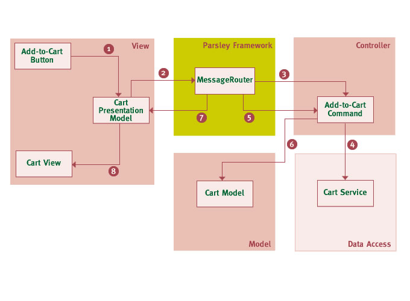

Parsley is different from several other Flex or Flash MVC Frameworks in that it does not provide very much explicit support for the various pieces of an MVC architecture. This was a side effect of our primary goal being to allow to design a fully decoupled architecture. Decoupled in a sense that not only the parts of your application are decoupled from each other, but also decoupled from the framework itself. For example providing base classes for controllers or mediators in the framework that application classes have to extend is a bad idea if you want to support such a decoupled architecture.
For that reason the Messaging Framework in Parsley which we already described in 6 Messaging is pretty generic. It does not assume a particular programming style or architectural pattern. Nevertheless Parsley still falls into the same category as many other MVC Frameworks since the Messaging Framework can easily be used in a way that helps building an application based on the MVC architectural pattern. In this chapter we will provide some examples on how to use the Messaging Framework in such a context.
The following diagram shows an example flow for a particular use case (user adds item to shopping cart) in the context of a Parsley MVC application:
Explanations for the numbered steps from the diagram:
MessageRouter MessageRouter will then process any MessageHandlers
or Commands which were registered for this message type (usually with Metadata tags on methods or properties, alternatively
in MXML or XML). In this case the AddToCartCommand will be invoked. From the example above many core elements will have been setup and wired in a
Parsley Context including the view as described in 9 Dynamic View Wiring.
This usually includes all controller actions, their dependencies like remote services,
and the registration for particular messages in the MessageRouter.
If you think this diagram smells like over-engineering, it merely serves as an example for a full blown MVC architecture of a large and complex application. In smaller and simpler applications you can of course simplify the design presented above.
Finally we'll pick one of the pieces presented in the diagram above and show
how the implementation and configuration of such an application part may look like.
We'll chose the AddToCartCommand that participates in the application flow shown in the diagram.
package com.bookstore.actions {
import mx.rpc.AsyncToken;
import mx.rpc.Fault;
import mx.rpc.remoting.RemoteObject;
import com.bookstore.messages.AddToCartMessage;
import com.bookstore.services.CartService;
import com.bookstore.model.LineItem;
public class AddToCartCommand {
[Inject(id="cartService")]
public var cartService:RemoteObject;
public function execute (message: AddToCartMessage): AsyncToken {
return cartService.addItem(message.item);
}
public function result (item: LineItem): void {
/* modify or cache the result */
}
public function error (fault: Fault): void {
/* handle fault */
}
}
}
And this is how you can map such a command to a message in a Parsley configuration class (in this case MXML):
<parsley:MapCommand type="{AddToCartCommand}" />
We'll now examine the various parts of this class in detail. First there is the method that executes the command:
public function execute (event: AddToCartMessage) : AsyncToken {
The method parameter tells the framework that we are interested
in AddToCartMessage. MessageHandler selection happens based on message type, so in a large and complex application
you won't run into problems having to maintain event type constants which are unique across the whole system.
In the body of that method we are using the injected CartService:
[Inject(id="cartService")]
public var cartService:RemoteObject;
In this example we are using a RemoteObject. We usually prefer to use injection by type but this is not applicable for RemoteObjects which can only be distinguished by id. For details see 14 Remoting.
Finally there are the result and error handlers:
public function result (item:LineItem) : void {
public function error (fault:Fault) : void {
We are following a naming convention here so we can avoid any metadata configuration altogether. Based on the method names the framework knows which method executes the command and which handles results or faults. The result and error handler are both optional.